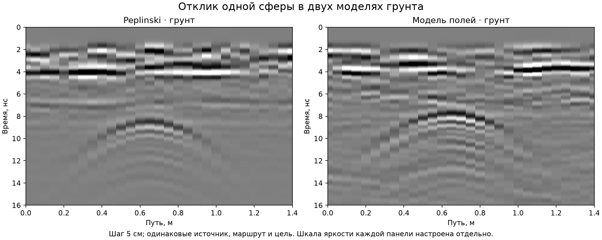
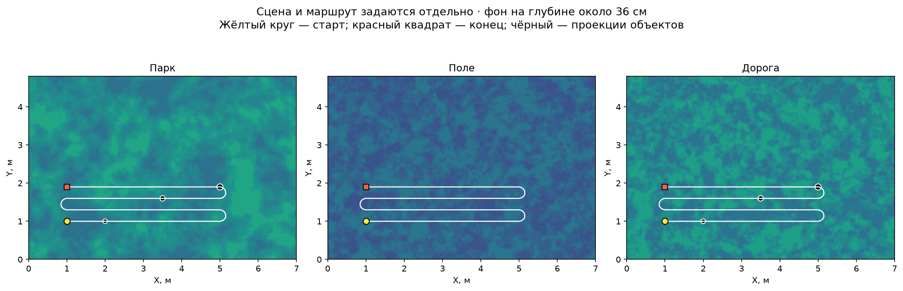

От сцены до радарограммы
Руководство по установке, настройке экспериментов, расчёту сигналов и просмотру результатов.
Установка и первый запуск#
Нужны Git и Python 3.12 или 3.13. Основной путь рассчитан на macOS и Linux; в Windows используется WSL2. ParaView устанавливается отдельно и нужен только для просмотра 3D-геометрии.
Установка окружения
git clone https://github.com/bySaf/geodatagen.git cd geodatagen bash scripts/setup.sh source .venv/bin/activateСкрипт создаёт окружение
.venvи устанавливает зависимости. При следующем открытии терминала достаточно снова активировать окружение.Первый небольшой эксперимент
python geodatagen.py init park-demo --scene examples/scenes/park-pilot.json --trajectory examples/trajectories/pilot-line.json python geodatagen.py run park-demo --limit 1 python geodatagen.py plot park-demo python geodatagen.py docs park-demoСцена и траектория задаются отдельными файлами. Все настройки и результаты этого опыта находятся в
experiments/park-demo/. После одной трассы уже можно проверить A-скан; полноценный B-скан появится после расчёта маршрута.Расчёт остальных позиций
python geodatagen.py run park-demo python geodatagen.py plot park-demo python geodatagen.py docs park-demoПовторный запуск продолжает опыт с незавершённых позиций. Расчёт волн занимает время; открытие документации или построение графиков не запускает новую симуляцию.
Выбор интерпретатора в PyCharm
- Открыть корневую папку
geodatagen. - Settings (
⌘,на macOS) → Project Structure. В других версиях страница называется Python Interpreter; она доступна через поиск настроек. - Add Interpreter → Add Local Interpreter → существующий Python / Existing environment.
- Указать
<папка проекта>/.venv/bin/python, затем Apply / OK. Версия — 3.12 или 3.13.
Если окружение ещё не создано, сначала создать Virtualenv на базе Python 3.12. После смены интерпретатора открыть новую вкладку Terminal и выполнить source .venv/bin/activate. Настройка интерпретатора — JetBrains.
Ошибка установки contourpy: сообщение Requires-Python >=3.12 указывает на старый интерпретатор. Проверка: python --version. Системный Python 3.9 на macOS не подходит; понижать версии пакетов из-за этого не требуется.
Один опыт — одна папка#
Имя после команды — имя эксперимента. park-demo, park-wet и park-no-target сохраняются раздельно, поэтому настройки и сигналы не перемешиваются.
experiments/park-demo/
├── index.html страница с результатами этого опыта
├── scene_config.json сохранённые параметры сцены
├── trajectory_config.json сохранённое описание маршрутов
├── objects.json фактические координаты объектов
├── positions.npz позиции Tx и Rx
├── trajectory.csv координаты позиций и путь вдоль маршрута
├── scene_layout.png объекты и траектории на плане и разрезе
├── soil_slice.png разрез свойств грунта
├── scene/
│ ├── scene.in описание сцены gprMax
│ ├── scene.vti геометрия и поля для ParaView
│ └── … материалы и геометрия расчёта
├── bscan.h5 сигналы и ось времени
├── ascan.png отдельная готовая трасса
├── bscan.png радарограмма готовых позиций
└── … результаты маршрутов и состояние расчётаinit создаёт геометрию, разворачивает траектории в позиции и строит стартовую страницу. run рассчитывает волны. plot обновляет графики и страницу опыта. В bscan.h5 все маршруты хранятся вместе с их идентификаторами, участками и накопленным расстоянием; на bscan.png каждому маршруту отведены отдельные панели. На одном рисунке помещается до четырёх маршрутов; следующие сохраняются в bscan_002.png, bscan_003.png и далее, все доступны на странице опыта. Вычитание средней трассы выполняется отдельно внутри каждого маршрута. Папку опыта можно передавать целиком.
Результаты зависят от сохранённых входных данных. Для изменения грунта, объектов, источника или пути отредактируйте исходные JSON и создайте опыт с новым именем. run продолжает существующий расчёт с незавершённых позиций.
Основные команды#
python geodatagen.py init park-full --scene examples/scenes/park.json --trajectory examples/trajectories/snake.json
python geodatagen.py run park-full --limit 1
python geodatagen.py status park-full
python geodatagen.py plot park-full
python geodatagen.py docs park-fullЭти команды подходят и для малой сцены, и для полной области. --limit 1 ограничивает первый запуск одной новой трассой. После проверки снимите ограничение: python geodatagen.py run park-full.
| Команда | Результат |
|---|---|
init ИМЯ --scene ФАЙЛ --trajectory ФАЙЛ | Подготовить сцену, объекты и маршруты. |
run ИМЯ | Рассчитать незавершённые позиции. |
status ИМЯ | Показать количество готовых трасс. |
plot ИМЯ | Обновить A- и B-сканы и страницу опыта. |
export ИМЯ | Обновить файл геометрии VTI. |
docs ИМЯ | Открыть страницу опыта. |
docs | Открыть это руководство. |
Остановить расчёт и затем продолжить
Команда остановки создаёт файл STOP внутри опыта. Текущая трасса завершится, после неё расчёт остановится:
python geodatagen.py stop park-fullПродолжить с оставшихся позиций:
python geodatagen.py run park-full --resumeФайл сцены#
JSON сцены описывает область, грунт, цели и источник. JSON траектории описывает движение передатчика. Можно менять путь над тем же грунтом или повторять один путь в разных сценах.
| Пример | Область и назначение |
|---|---|
examples/scenes/park-pilot.json | Небольшой парк 2.4 × 1.2 × 1.2 м, удобен для первого опыта. |
examples/scenes/park.json | Парк 7 × 4.8 × 1.2 м с четырьмя минеральными горизонтами. |
examples/scenes/field.json | Поле 7 × 4.8 × 1.2 м: верхний обрабатываемый и нижний уплотнённый слои. |
examples/scenes/road.json | Дорога 7 × 4.8 × 1.2 м: асфальт, основание и земляное полотно. |
Для нового варианта скопируйте пример и редактируйте копию:
mkdir -p configs
cp examples/scenes/park.json configs/my-park.json
cp examples/trajectories/snake.json configs/my-route.json
python geodatagen.py init my-park --scene configs/my-park.json --trajectory configs/my-route.json| Поле сцены | Что задаёт |
|---|---|
schema_version | 2 — формат с отдельной траекторией. |
grid | domain — размеры X/Y/Z; dx — шаг геометрии; solver_dx — шаг расчёта; surface_z — высота поверхности. Все длины в метрах. |
generator | custom_crim_archie или native_peplinski. Выбор хранится вместе со сценой. |
seed | Начальное число случайной генерации, необходимое для повторяемости. |
preset.layers | Слои сверху вниз и параметры каждого слоя. |
objects / object_generation | Явный список целей или правила случайной расстановки. Используется один вариант. |
source, sfcw | Источник и параметры дополнительной частотной обработки. |
simulation | Размер расчётной области вокруг каждой позиции. |
В полной сцене задано "simulation": {"mode": "moving_window", "window_xy": [1.2, 1.2]}. Грунт и цели создаются один раз во всей области, затем для каждой трассы рассчитывается локальное окно. Это приближение: дальние отражатели и части гипербол за границами окна могут отсутствовать. Оно не эквивалентно расчёту волн во всём объёме 7 × 4.8 м. Малый пример использует "mode": "fixed" и одну фиксированную область.
Для сравнения генераторов можно временно переопределить поле generator при подготовке нового опыта:
python geodatagen.py init park-native --scene examples/scenes/park.json --trajectory examples/trajectories/snake.json --mode native_peplinskiОбъекты и координаты#
Для точного размещения добавьте в файл сцены список objects. Каждый элемент задаёт отдельную сферу; пустой список "objects": [] создаёт сцену без целей.
"objects": [
{"type": "metal", "center_m": [3.00, 1.20, 0.45], "radius_m": 0.06},
{"type": "air", "center_m": [4.00, 2.00, 0.50], "radius_m": 0.08}
]center_m — координаты центра [X, Y, Z] в метрах. X и Y задают положение на плане, Z растёт вверх. Глубина центра равна grid.surface_z − Z. При поверхности Z = 0.90 м центр Z = 0.45 м находится на глубине 45 см. Радиус 0.06 м означает диаметр 12 см.
| Тип | Что получится |
|---|---|
metal | Идеально проводящая сфера. |
air | Шарообразная воздушная полость. |
dielectric | Сфера с εr = 4 и проводимостью 0.001 См/м. |
Для случайного размещения скопируйте examples/scenes/park-random.json. Поле object_generation задаёт правила. Программа сохраняет полученные координаты в objects.json; изменение seed даёт новую расстановку. Не добавляйте одновременно явный список objects.
"object_generation": {
"seed": 20261112,
"clearance_m": 0.04,
"bounds_m": [[0.8, 6.2], [0.8, 4.0]],
"rules": [
{"type": "metal", "count": [2, 4], "radius_m": [0.04, 0.08], "depth_m": [0.2, 0.5]}
]
}bounds_m ограничивает X и Y центров, depth_m — глубину центра под поверхностью, clearance_m — запас между целями и под поверхностью. count принимает точное количество или диапазон целых чисел. Радиус и глубина выбираются из указанных интервалов.
После init проверьте scene_layout.png или откройте геометрию в ParaView. Проверки отсекают пересекающиеся сферы и цели за допустимыми границами. Сетка дискретизирует сферу, поэтому её граница в расчёте ступенчатая. Труба, корень или плита требуют другого описания геометрии.
Два способа построения грунта#
| Режим | Как устроен грунт |
|---|---|
native_peplinski | Штатные Peplinski и fractal_box gprMax: неоднородная влажность в слоях, плоские границы, частотно-зависимые свойства. |
custom_crim_archie | Модель полей: связанные пятна свойств, настраиваемые размеры неоднородностей и неровные внутренние границы; свойства через CRIM/Archie. |
Слои перечислены сверху вниз в preset.layers. Оба режима создают случайный грунт, но используют разные законы его свойств. При переключении меняются и пространственная структура, и закон преобразования в электрические свойства. Более выразительный рисунок не означает более точную модель. Один seed у двух генераторов не создаёт одинаковое случайное поле.
| Настройка | Что менять |
|---|---|
thickness | Толщину слоя в метрах. Сумма толщин должна совпадать с grid.surface_z. |
sand, clay | Доли песка и глины. Остаток — пылеватая фракция. |
bulk_density | Сухую объёмную плотность, г/см³. |
water_min, water_max | Объёмную влажность: 0.20 означает, что вода занимает 20% объёма грунта. |
custom.correlation_m | Размеры связанных пятен по X/Y/Z, например [0.25, 0.25, 0.06]. |
custom.roughness_rms_m | Неровность внутренних границ; например 0.02 м. |
seed | Номер случайной реализации. При сравнении одного изменяемого фактора используется одинаковый seed. |
У Peplinski water_min/max ограничивают диапазон влажности. У модели полей они задают исходные среднее и разброс: местные значения могут выходить за интервал, оставаясь в пределах доступного объёма пор. Во время прохода грунт не меняется.
В модели полей явно задаётся custom.water_conductivity_s_m: проводимость поровой воды нельзя вывести только из влажности и состава. Пористость по умолчанию связана с плотностью как 1 − bulk_density / 2.66. Параметры Archie, проводимость воды и поверхности, ε зёрен и воды в примерах — допущения сценария. Асфальт и щебёночное основание заданы отдельными эффективными материалами.
custom.correlation_m задаёт характерные пространственные масштабы, а не измеренный диапазон ковариации. Неровность применяется к внутренним границам минеральных слоёв; внешняя поверхность остаётся плоской. В native фрактальная размерность и веса осей также не задают длину корреляции напрямую.
Сохранённое custom_fields.npz описывает непрерывное поле до добавления объектов. Фактические материалы после дискретизации и объекты находятся в геометрии сцены. Подготовка полного custom-объёма может требовать несколько гигабайт временной памяти; уменьшение шага сетки быстро увеличивает этот расход.

Источник сигнала#
Tx передаёт импульс, Rx записывает поле в своей точке. Здесь используются идеальный диполь и точечный приёмник. Корпус, электроника и калибровка конкретного георадара в эту постановку не входят.
| Параметр сцены | Смысл |
|---|---|
source.waveform | Форма импульса; в новых примерах gaussiandotnorm. |
source.frequency_hz | Параметр частоты импульса: 600000000 = 600 МГц. |
source.moment_Am | Амплитуда момента источника, А·м. |
source.height_m | Высота над поверхностью при маршруте без Z: 0.02 = 2 см. |
source.tx_rx_offset_m | Смещение Rx относительно Tx вдоль глобальной оси +X. |
grid.time_window | Длительность записи: 3.2e-8 = 32 нс. Это время, не глубина. |
sfcw | Полоса дополнительной обработки сигнала в частотной области. Она не заменяет модель электроники ступенчатого прибора. |
Ориентация диполя и разнос Tx/Rx фиксированы в глобальных осях. На поворотах маршрута пара не разворачивается вслед за движением: Rx остаётся смещён по +X, диполь направлен по Y. Это нужно учитывать при сравнении с прибором, который оператор разворачивает целиком.
Траектория движения#
Файл траектории задаёт позиции передатчика. Координаты — метры в той же системе, что и сцена. Для точек [x, y] высота автоматически равна grid.surface_z + source.height_m; [x, y, z] задаёт абсолютную высоту Z. Приёмник добавляется с разносом из source.tx_rx_offset_m.
Прямой проход
Сохраните пример как configs/line.json. Шаг 5 см задаёт максимальный интервал между позициями. Конец каждого отрезка сохраняется, поэтому последний интервал может быть короче:
{
"type": "line",
"start": [0.8, 1.2],
"end": [5.8, 1.2],
"step_m": 0.05
}Змейка
row_length_m — длина прямого прохода, rows — их количество, row_spacing_m — расстояние между проходами. turn выбирает соединение straight или rounded; heading_deg поворачивает весь маршрут против часовой стрелки относительно +X. При нуле первый проход идёт по +X, следующие смещаются по +Y.
{
"type": "snake",
"start": [1.0, 1.0],
"row_length_m": 4.8,
"rows": 6,
"row_spacing_m": 0.4,
"step_m": 0.05,
"turn": "rounded",
"heading_deg": 0
}Это шесть проходов с пятью поворотами. Шаг действует и на соединениях; округлый поворот — полуокружность радиусом в половину междурядья, которая на столько же выступает за конец прохода. Маршрут и приёмник должны помещаться в доступную часть сцены.
Произвольный путь и готовые точки
waypoints соединяет опорные точки отрезками и расставляет позиции с указанным шагом. points принимает готовую последовательность позиций без добавления промежуточных точек.
{
"type": "waypoints",
"points": [[1.0, 1.0], [3.0, 1.0], [4.5, 2.5], [2.0, 3.5]],
"step_m": 0.05
}{
"type": "points",
"points": [[1.0, 1.0], [1.1, 1.0], [1.2, 1.1]]
}Импорт из CSV
CSV содержит заголовок x_m,y_m или x_m,y_m,z_m. Путь file указывается относительно JSON траектории. Без step_m используются строки CSV; с ним путь пересэмплируется по заданному шагу.
{
"type": "csv",
"file": "track.csv",
"step_m": 0.05
}x_m,y_m
1.0,1.0
3.0,1.0
4.5,2.5Несколько маршрутов над одной сценой
Оберните любое количество описаний в routes. Необязательные имена name должны быть уникальными. Грунт и объекты будут общими, позиции и B-сканы — отдельными для каждого маршрута:
{
"routes": [
{"name": "south", "type": "line", "start": [0.8, 1.0], "end": [5.8, 1.0], "step_m": 0.05},
{"name": "north", "type": "line", "start": [0.8, 2.0], "end": [5.8, 2.0], "step_m": 0.05}
]
}python geodatagen.py init custom-route --scene examples/scenes/park.json --trajectory configs/line.json
python geodatagen.py docs custom-routeПеред расчётом проверьте план scene_layout.png. Позиции привязываются к расчётной сетке, поэтому фактический шаг может немного отличаться от заданного; соседние точки, попавшие в одну ячейку Tx, объединяются. Позиции Tx и Rx должны находиться выше поверхности и вне поглощающей границы сцены. В positions.npz и trajectory.csv сохранены исходные и фактические координаты Tx/Rx, номер и имя маршрута, номер участка и расстояние от начала маршрута. Для анализа сигнала используйте фактические координаты.
Горизонтальная ось B-скана показывает накопленное расстояние вдоль маршрута, вертикальная — время. Змейка включает возвратные проходы и повороты, поэтому её общая радарограмма не равна одному прямому профилю. Форму гипербол удобнее изучать на прямых участках; переходы между участками меняют геометрию наблюдения.
Как открыть эксперимент в ParaView#
ParaView показывает геометрию и свойства сцены. A- и B-сканы доступны на странице эксперимента и в PNG. Установить ParaView можно с официального сайта.
Подготовка файла геометрии
python geodatagen.py export park-demoФайл для открытия:
experiments/park-demo/scene/scene.vti. Он создаётся и при начальной подготовке опыта.Открытие объёма
Запустить ParaView → File → Open → выбрать
scene.vti→ OK → зелёная кнопка Apply. Нажать Reset Camera, если область не попала в кадр.Вертикальный разрез вдоль маршрута
Выделить
scene.vtiв Pipeline Browser. Выбрать Filters → Common → Slice. Для малогоpark-pilot.jsonзадать Origin = [1.2, 0.6, 0.4], Normal = [0, 1, 0], затем Apply. Это плоскость X–Z через маршрут Y = 0.6 м.Выключить «глаз» у исходного объёма, чтобы он не закрывал разрез. Выключить Show Plane, чтобы убрать рамку инструмента.
Выбор поля для окраски
В верхнем списке Color By выбрать
epsilon_realи нажать Rescale to Data Range. Для фронтального вида разреза выбрать направление камеры вдоль оси Y.
| Поле VTI | Что означает цвет |
|---|---|
epsilon_real | Действительная часть относительной диэлектрической проницаемости на частоте источника. |
conductivity_effective_S_m | Эффективная проводимость в См/м, включая потери модели на этой частоте. |
material_id | Номер материала. Это метка, а не физическое свойство. |
object_type | 0 — фон, 1 — металл, 2 — воздушная полость, 3 — диэлектрическая цель. |
Для идеально проводящего металла ε и проводимость не задаются обычными конечными числами. Для отображения металла используется поле object_type.
Другие разрезы
Горизонтальный: Normal = [0, 0, 1]. В малом парковом примере на глубине 35 см при поверхности Z = 0.80 м параметр Origin Z = 0.45. Поперечный: Normal = [1, 0, 0], Origin X — нужная координата.
Объект виден только там, где его пересекает разрез. Если сфера имеет Y = 0.8 м, плоскость Y = 0.6 м может пройти мимо неё. Z в ParaView направлена вверх; глубина равна surface_z − Z.
Сохранить расположение камеры, разрезы и цвета: File → Save State, файл .pvsm сохраняется в папку эксперимента. Повторное открытие — File → Load State. После перемещения папки нужно указать новый путь к scene.vti.
Ошибки открытия геометрии
Для проверки геометрии следует открыть scene.vti в пустой сессии ParaView. Старый .pvsm может ссылаться на файлы на другом компьютере. Готовые PNG и страница опыта доступны независимо от ParaView.
В старых данных gprMax геометрия сохранена как .vtkhdf; для неё нужен совместимый ParaView. Файлы .in и обычный bscan.h5 не следует открывать как изображение геометрии.
Слои паркового грунта#
В сравнительном опыте — четыре горизонта и одна металлическая сфера диаметром 12 см с центром на глубине 35 см. Цветной разрез показывает устройство сцены, а не сигнал радара.

| Слой | Глубина | Сухая плотность | Настройка влажности |
|---|---|---|---|
| 1 | 0–10 см | 1.25 г/см³ | 12–18% |
| 2 | 10–22 см | 1.45 г/см³ | 13–21% |
| 3 | 22–60 см | 1.55 г/см³ | 15–23% |
| 4 | 60–80 см | 1.60 г/см³ | 16–24% |
Это настраиваемый сценарий газона на минеральной почве. Он не является измеренной картой конкретного парка. У двух моделей отличаются и рисунок неоднородностей, и электрофизические свойства; более сильное эхо нельзя объяснять только формой пятен.
Контрольный прямой проход#
Один прямой проход — 29 положений передатчика с шагом 5 см. Между Tx и Rx 10 см, высота над землёй 2 см. Для каждого положения рассчитывается одна временная запись. Готовый сравнительный набор содержит 58 основных трасс — по 29 на каждую модель грунта — и 4 контрольных расчёта.

A-скан — амплитуда во времени в одной позиции. Сигнал включает отклики из окружающей области, а не только от строго вертикального луча под приёмником.
Синтетические B-сканы#
B-скан складывает временные записи вдоль маршрута. Горизонтальная ось — путь в метрах; вертикальная — время в наносекундах. Отклик локальной цели образует дугу, потому что расстояние до неё меняется при движении.

Реальные гиперболы#
Ниже — реальные измерения арматуры в бетоне прибором Proceq GP8800. Это ступенчатый георадар SFCW с номинальной полосой 0.4–6 ГГц. Исходный шаг 5 мм сохранён, поэтому отдельные дуги хорошо различимы.

У синтетической сцены и реального образца разные цели, материал, глубины и частотная полоса. Здесь видно характерное устройство отклика; одинаковое время и абсолютная амплитуда от этих двух опытов не ожидаются.
Сравнение на одной сетке#
Дополнительный вид с общим окном 1.4 м × 16 нс и шагом 5 см × 50 пс. Реальные данные перед уменьшением числа трасс сглажены, чтобы избежать ложных деталей. Из-за этого часть мелких дуг теряется; исходный профиль выше информативнее для арматуры.

Парк, поле и дорога#
Полные примеры используют область 7 × 4.8 × 1.2 м и те же команды, что и малый опыт. Ниже — геометрия новых конфигураций с моделью полей CRIM/Archie и источником 600 МГц. Генератор можно переключить на Peplinski в файле сцены или через --mode.


python geodatagen.py init field-full --scene examples/scenes/field.json --trajectory examples/trajectories/snake.json
python geodatagen.py init road-full --scene examples/scenes/road.json --trajectory examples/trajectories/snake.json
python geodatagen.py run field-full --limit 1
python geodatagen.py plot field-fullПараметры грунта — допущения синтетических сценариев. Верх поля имеет толщину 0.26 м; у дороги 0.08 м асфальта и 0.20 м основания. В поле и дороге поверхность находится на Z = 0.90 м; актуальную высоту любой сцены берите из grid.surface_z. Полный расчёт идёт по локальным окнам, как описано в настройках сцены.
Источники и физические допущения#
Пресеты представляют физически мотивированные синтетические сценарии. Названия «парк», «поле» и «дорога» не обозначают измеренные участки. Публикации обосновывают выбор модели и порядок параметров; точные толщины, влажности, плотности, проводимости и масштабы неоднородностей задаются в JSON.
Электрические свойства грунта
Модель Peplinski опубликована для диапазона 0.3–1.3 ГГц. Она связывает состав, плотность и объёмную влажность с диэлектрическими свойствами. Это полуэмпирическая модель: свойства глинистых, солёных, замёрзших и богатых органикой грунтов требуют отдельной проверки. Центральная частота импульса внутри диапазона не гарантирует, что весь значимый спектр находится в нём.
- Peplinski, Ulaby, Dobson, 1995 — Dielectric properties of soils in the 0.3–1.3-GHz range — первичная публикация модели.
- Команды материалов и геометрии gprMax — реализация Peplinski, фрактальные области, источники и приёмники. В используемой реализации свойства воды заданы при 25 °C и нулевой солёности.
Для минерального грунта проверяются sand + clay ≤ 1, 0 < bulk_density < 2.66 и влажность не выше пористости 1 − bulk_density / 2.66. У CRIM/Archie потери и пространственные масштабы задаются явно; эта модель не становится точнее Peplinski без проверки на измерениях. Происхождение реализации сохранено в src/supervisor_fields.py.
Почвенные горизонты и покрытия
- Burgos Hernández et al., 2019 — опубликованные городские почвенные профили, использованные как ориентир для горизонтов.
- USDA Soil Survey Manual — описание горизонтов и границ.
- USDA NRCS — Soil Quality Indicators: Bulk Density — сухая объёмная плотность, зависимость от текстуры и уплотнение.
- Edmondson et al., 2011 — плотность городских почв.
- Pouyat et al., 2007 — Soil Chemical and Physical Properties That Differentiate Urban Land-Use and Cover Types — изменчивость городских грунтов и влияние использования территории.
- FHWA InfoTechnology — Ground Penetrating Radar — типичные интервалы εr: 4–8 для асфальтобетона и 6–8 для щебёночного основания. Выбранные εr = 6 и 7 находятся внутри этих интервалов; толщины и проводимости остаются отдельными допущениями проекта.
Плоская поверхность, эффективное покрытие дороги, сферические цели и отсутствие отдельных корней, камней и солей ограничивают сходство с реальным участком. Для количественных выводов нужны проверка спектра, сеточная сходимость и оценка влияния размера расчётного окна.
Реальные данные и программы
- Mercedes Solla, 2024 — измерения арматуры в бетоне; статья. Данные SFCW предоставлены Screening Eagle. Лицензия: GPL-3.0-or-later.
- Документация gprMax — построение сцены и расчёт электромагнитных полей.
- Руководство ParaView — чтение геометрии, фильтры и сохранение состояния.